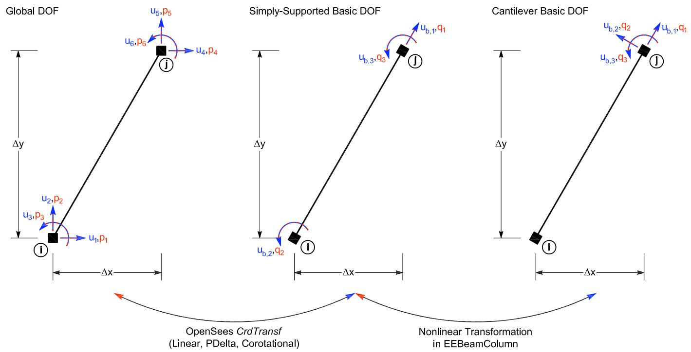

3.9. 梁柱单元坐标体系及变换关系
3.9.1. 2D 梁柱单元坐标体系及变换关系
3.9.1.1. 问题描述
在二维梁柱单元中，通常涉及四类坐标或自由度体系：
Global system，全局坐标系；
Local system，单元局部坐标系；
Basic system A，结构理论 basic 坐标系（即 OpenSees 里面的basic坐标系 ）；
Basic system B，实验控制 basic 坐标系（OpenFresco 独有）。
其中，Global system 用于结构整体平衡方程，Local system 用于描述构件轴向和横向方向，Basic system A 用于 OpenSees 中梁柱单元的理论基本自由度（即 OpenSees 里面的basic坐标系），Basic system B 用于 OpenFresco 实验单元的控制与量测自由度(在这里就是悬臂柱单元)。
本文整理 2D 梁柱单元中 Global、Local、Basic system A 和 Basic system B 之间的位移、力和刚度变换关系。
在程序中，Global、Local、Basic system A之间的转换由 geomTransf Linear、PDelta和Corotational完成。
Basic system A 和 Basic system B 之间的转换由 expElement beamColumn （即源码OpenFresco/SRC/experimentalElement /EEBeamColumn2d.cpp ）完成，这里的转换只说明了linear转换，非线性转换参考源代码。

3.9.1.2. 符号定义
3.9.1.2.1. 位移向量
全局位移向量定义为
局部位移向量定义为
Basic system A 位移向量定义为
Basic system B 位移向量定义为
3.9.1.2.2. 力向量
全局力向量定义为
局部力向量定义为
Basic system A 力向量定义为
Basic system B 力向量定义为
3.9.1.2.3. 局部坐标系与方向余弦
对于二维梁柱单元，局部 \(x\) 轴沿构件节点 \(i \rightarrow j\) 方向。设节点 \(i\) 和节点 \(j\) 的全局坐标分别为 \((x_i,y_i)\) 和 \((x_j,y_j)\)，则单元长度为
局部 \(x\) 轴相对于全局坐标系的方向余弦为
其中，\(c\) 和 \(s\) 分别为局部 \(x\) 轴在全局 \(x\) 和 \(y\) 方向上的投影。
3.9.1.3. 位移变换
3.9.1.3.1. Global 到 Local 的位移变换
Global 到 Local 的位移变换为
其中，\(\mathbf T_{lg}\) 为 Global 到 Local 的坐标变换矩阵：
因此有
3.9.1.3.2. Local system 到 Basic system A 的转换
矩阵形式为：
其中：
3.9.1.3.3. Global 到 Basic system A 的位移变换
将局部位移代入全局位移，可得
其中
即
3.9.1.3.4. Basic system A 到 Basic system B 的位移变换
Basic system B 是实验控制 basic 坐标系（这里就是悬臂柱）。对于 Linear 或 PDelta 几何变换，其与 Basic system A 的关系为
其中
展开为
因此，Global 到 Basic system B 的总位移变换为
3.9.1.4. 力变换
3.9.1.4.1. Basic system B 到 Basic system A 的力变换
根据虚功一致性，有
又因为
所以
因此
其中
即
3.9.1.4.2. Basic system A 到 Local 的力变换
Basic system A 的力向量可写为
其中，\(N_a\) 为轴力，\(M_{a1}\) 和 \(M_{a2}\) 分别为两端弯矩。
由梁端力平衡，局部剪力为
因此，局部力向量为
即矩阵形式： $\( Q=T_{Al}^T q_{A} \)$
3.9.1.4.3. Local 到 Global 的力变换
Local 到 Global 的力变换为
其中
展开为
因此，力的完整传递链条为
可写为
3.9.1.5. 刚度转换
3.9.1.5.1. Basic system B 到 Basic system A 的刚度转换
\({K}_B\)就是该单元输入的初始矩阵。 若：
则：
代码中对应展开为：
其余耦合项在该实现中未展开，主要保留轴向项和弯曲控制项。
3.9.1.6. 物理含义总结
Global system 用于整体结构方程组的组装和平衡；Local system 用于描述构件沿自身轴线方向和横向方向的力学行为；Basic system A 是梁柱单元理论分析中的最小自由度体系，主要描述轴向变形和两端弯曲转角；Basic system B 是实验单元中用于控制和量测的自由度体系。
其中，\(\mathbf T_{lg}\) 描述 Global 与 Local 之间的坐标旋转关系，\(\mathbf T_{Al}\) 描述 Local 与 Basic system A 之间的几何关系，\(\mathbf T_{Ag}\) 描述 Global 与 Basic system A 之间的几何关系，这部分转换在geomTransf Linear、PDelta和Corotational中完成。
\(\mathbf T_{BA}\) 描述 Basic system A 与 Basic system B 之间的实验接口映射关系。
最终，2D 梁柱实验单元的核心变换关系可概括为
位移变换链条
核心表达式为
力变换链条
核心表达式为
3.9.2. 3D 梁柱单元坐标体系及变换关系
3.9.2.1. 问题描述
在三维梁柱单元中，涉及四类坐标或自由度体系：
Global system，全局坐标系；
Local system，单元局部坐标系；
Basic system A，OpenSees 结构理论 basic 坐标系；
Basic system B，OpenFresco 实验控制 basic 坐标系。
其中，Global、Local 和 Basic system A 之间的转换由 LinearCrdTransf3d 完成；Basic system A 与 Basic system B 之间的实验接口转换由 EEBeamColumn3d 完成。
3.9.2.2. 符号定义
3.9.2.2.1. 位移向量
全局位移向量：三维梁柱单元每个节点有 6 个自由度：
局部坐标系下位移向量为
Basic system A 位移向量：根据 LinearCrdTransf3d::getBasicTrialDisp()，OpenSees 3D basic deformation 为
其中
Basic system B 位移向量：OpenFresco 3D 实验 basic 坐标系为
其中可理解为
3.9.2.2.2. 力向量
全局力向量定义为
局部力向量定义为
Basic system A 力向量定义为
Basic system B 力向量定义为
3.9.2.2.3. 局部坐标系定义
对于3维梁柱单元，局部 \(x\) 轴沿构件节点 \(i \rightarrow j\) 方向。设节点 \(i\) 和节点 \(j\) 的全局坐标分别为 \((x_i,y_i,z_i)\) 和 \((x_j,y_j,z_j)\)
单元长度为
局部 \(x\) 轴为
在 LinearCrdTransf3d 中，用户输入的 vecInLocXZPlane 用于确定局部 \(xz\) 平面。设该向量为
则局部 \(y\) 轴由
局部 \(z\) 轴由
因此方向余弦矩阵为
3.9.2.3. 位移变换
3.9.2.3.1. Global system 到 Local system
三维局部位移由全局位移旋转得到：
其中
即
3.9.2.3.2. Local system 到 Basic system A
根据 LinearCrdTransf3d::getBasicTrialDisp()，3D basic deformation 为
展开为
矩阵形式为
3.9.2.3.3. Basic system A 到 Basic system B
对于 EEBeamColumn3d 中的 Linear 或 PDelta 情况，Basic system A 到 Basic system B 的位移变换为
其中
展开为
因此，Global 到 Basic system B 的完整位移变换为